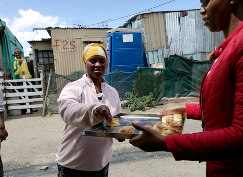
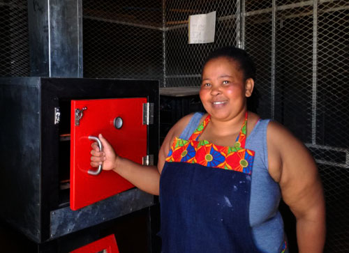

AX Design Workshops
For leaders and designers navigating the shift from making to deciding
Clarity Judgment Decision-Making Systems Thinking Agentic Design Human Oversight Strategic Thinking Autonomy Clarity Judgment Decision-Making Systems Thinking Agentic Design Human Oversight Strategic Thinking Autonomy
The Shift
For years, the path was clear.
You learned the craft. You made things. You improved over time.
Now systems can generate the work faster, cheaper, and at scale.
But the responsibility hasn’t gone away.
Someone still has to decide what matters and why. What gets made. What gets trusted.
That’s the shift.
From making things—
to deciding what happens.
How We Work
Executive Masterclasses
Build shared clarity across leadership teams when the stakes are high.
Strategic Workshops
Turn complexity into direction. Move from discussion to decision.
Keynote Provocations
Shift how your organisation sees the problem—and what to do next.
Leadership Coaching
Think clearly when the pressure is real and the answers aren’t obvious.
Strategic Workshops
A five-part workshop progression from execution to orchestration.
Designed for people who are no longer just making things,
but are responsible for what happens next.
W1 - Explorer
You see the gap between what you intend and what the system produces.
You begin to understand where judgment matters.
W2 - Practitioner
You move from one-off prompts to repeatable workflows.
The work becomes structured, not improvised.
W3 - Integrator
You decide where humans stay in the loop.
You design how decisions are made—and when.
W4 - Architect
You stop designing outputs.
You design systems that act on their own.
W5 - Steward
You hold the line.
Clarity, taste, and judgment become your role.
Case
The thinking was good. The people were sharp.
But every conversation ended the same way—no decision.
The problem
Too many perspectives. No clear move. Everything felt important.
The shift
We asked a different question:
What are you actually deciding?
The result
A clear decision—in under an hour.
Alignment followed.
About
For more than twenty years, the work has been the same—
help people see clearly and decide well.
Across strategy, design, and complex systems, one pattern holds:
When people think clearly, better outcomes follow.
You don’t need more information.
You need clarity on what to do next.
The Problem
In 1943, a brightly painted aircraft flew ahead of formation. Not to lead—but to steady the field.


Today, leadership teams face pressure of a different kind. More information. More voices. Less clarity.
The Concept
This workshop series helps designers move from producing outputs
to shaping outcomes—across five stages of increasing autonomy.
Seeing the gap between intent and output.
Making results repeatable.
Deciding where human judgment is required.
Designing systems that act independently.
Holding clarity when everything else is automated.
Behind this progression is a rigorous model of automation and capability.
You don’t need to see it.
You will feel it in how you think.